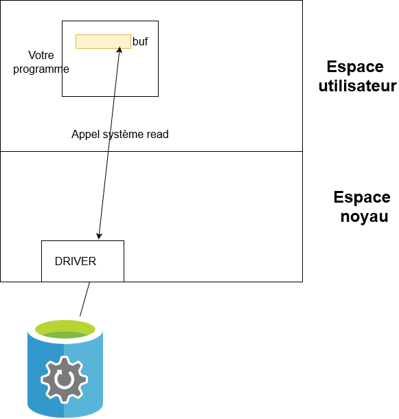

TDM04¶
Exercice 1 : Lecture d'un fichier¶
L'objectif de cet exercice est de comprendre le fonctionnement de la lecture d'un fichier sur le système de fichier. Nous allons illustrer ce fonctionnement par un programme en Java, mais il faut noter que ce fonctionnement est strictement identique en lanage C ou dans un autre langage.
Commencez par créer un fichier /home/userir/lecture_fichier.txt avec votre outil favori (vi, nano, ...). Dans ce fichier, vous pouvez placer un texte quelconque, d'une longueur d'au moins 30 caractères.
Voici maintenant un exemple de code à utiliser pour afficher le contenu de votre fichier :
import java.io.FileInputStream;
import java.io.IOException;
public class SampleFileReader
{
public static void main(String[] args) throws Exception
{
SampleFileReader fr = new SampleFileReader();
fr.execute();
}
/**
*
*/
private void execute() throws IOException
{
System.out.println("Début lecture du fichier");
FileInputStream fis = new FileInputStream("c:/tmp/lecture_fichier.txt");
byte[] buf = new byte[10];
int len = fis.read(buf);
while(len!=-1)
{
displayBufContent(buf,len);
len = fis.read(buf);
}
fis.close();
System.out.println("Fin lecture du fichier");
}
private void displayBufContent(byte[] buf, int len)
{
System.out.println("len="+len);
for (int i = 0; i < len; i++)
{
System.out.println("Caractère lu : "+buf[i]);
}
}
}
Executez cet exemple de code. Ce programme affiche en décimal le code ASCII de chaque caractère du fichier. Vous trouverez avec ce lien une table de corresponsance :
Voici un schéma explicatif sur le transfert des données vers le buffer :

Exercice 2 : Ecriture d'un fichier¶
Nous allons maintenant étudier un programme en Java écrivant dans un fichier.
Voici maintenant un exemple de code à utiliser pour écrire le contenu d'un fichier :
import java.io.FileOutputStream;
import java.io.IOException;
public class SampleFileWriter
{
public static void main(String[] args) throws Exception
{
SampleFileWriter fr = new SampleFileWriter();
fr.execute();
}
/**
*
*/
private void execute() throws IOException
{
System.out.println("Début écriture du fichier");
FileOutputStream fos = new FileOutputStream("c:/tmp/ecriture_fichier.txt");
byte[] buf = new byte[10];
buf[0] = 69;
buf[1] = 83;
buf[2] = 73;
buf[3] = 83;
buf[4] = 65;
buf[5] = 82;
// Ecriture des 6 premiers octets du buffer
fos.write(buf,0,6);
// Fermeture du fichier
fos.close();
System.out.println("Fin écriture du fichier");
}
}
Executez cet exemple de code et étudiez le.
Exercice 3 :Copie d'un fichier¶
Réalisez maintenant un programme simple de copie de fichier : votre programme doit copier le fichier /home/userir/file1 vers le fichier /home/userir/file2
Vous devez vous inspirer des deux exemples précédents (utilisez uniquement les classes FileInputStream et FileOutputStream, et uniquement les méthodes read, write et close de ces classes).
Votre programme doit aussi afficher le temps mis pour réaliser la copie.
Voici un exemple pour mesurer le temps :
long start = System.currentTimeMillis();
//
// Your code here
//
long stop = System.currentTimeMillis();
System.out.println("Elapsed Time = "+(stop-start)+" ms");
Exercice 4 : Test de votre programme de copie de fichiers¶
Créer un fichier de 1Go en utilisant la commande suivante
dd if=/dev/urandom of=file1 bs=1000000 count=1000
Utiliser le programme de l'exercice 1 pour copier ce fichier de 1Go, et mesurer le temps mis pour faire cette copie.
Vérifier que votre copie est correcte en utilisant l'utilitaire diff.
diff file1 file2
Faites maintenant varier la taille du buffer utilisé par votre programme (vous testerez avec une taille de buffer de 10,100,1000,10_000,1_000_000).
Tracez la courbe du temps mis en fonction de la taille du buffer.
Exercice 5 : Transfert de fichier par socket TCP/IP (sans choix du fichier)¶
Ecrire un programme client et un programme serveur qui permettent l'échange d'un seul fichier (toujours le même).
Le programme client se connecte au serveur, le serveur retourne au client le contenu du fichier /home/userir/file_serveur.txt (vous pouvez mettre en dur ce nom de fichier dans votre programme serveur).
Le programme client sauvegarde le fichier reçu dans le fichier /home/userir/file_client.txt (vous pouvez mettre en dur ce nom de fichier dans votre programme client).
Faites des essais avec un fichier file_serveur.txt de 1Go. Mesurez le temps mis pour le transfert.
Vérifier que votre copie est correcte en utilisant l'utilitaire diff.
Exercice 6 : Transfert de fichier par socket TCP/IP (avec choix du fichier)¶
Ecrire un programme client et un programme serveur qui permettent l'échange de fichier, avec choix du fichier par le client.
Le programme client envoie au serveur le nom du fichier qu'il souhaite obtenir. Le serveur retourne au client le fichier demandé.
Le programme client sauvegarde le fichier demandé dans le répertoire courant.
Vérifier que votre copie est correcte en utilisant l'utilitaire diff.
Attention : le transfert du nom du fichier n'est pas un problème trivial. Réfléchissez à la méthode qu'il faut utiliser pour savoir que l'on a lu tout le nom du fichier.
Exercice 7 : Amélioration du transfert de fichiers¶
Modifiez le programme précédent pour faire un affichage de l'avancement du téléchargement sur le client.
Pour cela, il est nécessaire que le serveur retourne au client la taille du fichier avant d'envoyer son contenu.
Coté serveur, pour connaître la taille du fichier, il faut utiliser le code Java suivant :
String nomFichier = ...;
File f = new File(nomFichier);
long fileSize = f.length();